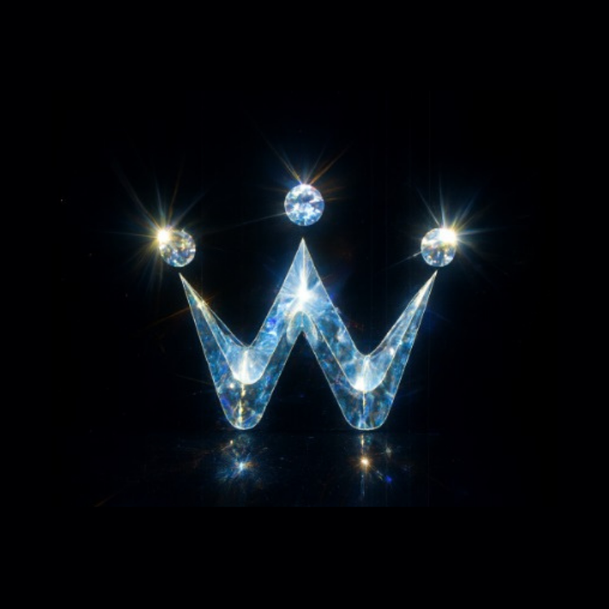

앱 아이콘 생성기의 CONTENT_BOX_RATIO = 0.995와 맞추기 위해, 원형 버튼 안쪽 여백을
p-[0.3%]로 두고 로고는 가용 영역 전체에 object-fit: contain으로 맞춥니다.
실제 앱은 Home.tsx 채굴 버튼과 동일한 비율입니다.

이미지 소스: mining-center-for-preview.png (= 빌드용 mining-center-logo.png 복사본)